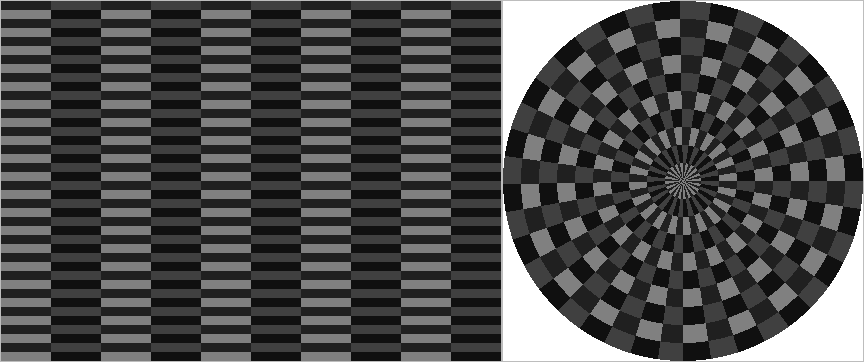

Introduction
This section explains general commands and useful hints in using Rack.
Modifying data
Deleting data
The h5 structure can be pruned with –delete command which uses selector arguments similar to that of –select (see Selecting data).
Examples:
# Delete dataset[i] groups 2...10
rack volume.h5 --
delete dataset=2:10 -o volume-modified.h5
# Delete data[i] groups 3...20
rack volume.h5 --
delete data=3:20 -o volume-modified.h5
# Delete data[i] groups 3...20, in dataset[i] groups 2...10
rack volume.h5 --
delete dataset=2:10,data=3:20 -o volume-modified.h5
# Delete independently dataset[i] and data[i] groups: issue two commands
rack volume.h5 --
delete dataset=2:6 --
delete data=2:5 -o volume-modified.h5
# Delete data[i] groups containing VRAD
rack volume.h5 --
delete quantity=VRAD -o volume-modified.h5
# Delete data[i] groups containing VRAD in 1.0 degree sweeps and above
rack volume.h5 --
delete elangle=1.0:90,quantity=VRAD -o volume-modified.h5
# Delete data (array) groups
rack volume.h5 --
delete groups=array -o volume-modified.h5
# Delete quality[i] groups
rack volume.h5 --
delete groups=quality -o volume-modified.h5
Notice that –elangle applies to volume data only, and essentially selects dataset groups. Similarly, quantity selects data (and quality) groups. If selection parameters of both levels are issued in the same command, implicit AND function applies in selection.
Keeping some, deleting other
Alternatively, one may use the complement operation –keep to save part of the data.
Metadata groups (what, where, how) are preserved or deleted together with their parent groups.
Examples:
# Keep data[i] groups containg DBZH
rack volume.h5 --keep quantity=DBZH -o volume-modified.h5
# Keep dataset[i] groups containing (at least) VRAD
rack volume.h5 --keep quantity=VRAD -o volume-modified.h5
# Keep dataset[i] group with elangle 5.0 degrees, at lowest
rack volume.h5 --keep elangle=5.0:90.0 -o volume-modified.h5
# Keep three dataset[i] groups with lowest elangle
rack volume.h5 --keep elangle=-90.0:90.0,count=3 -o volume-modified.h5
# Keep quality[i] groups
rack volume.h5 --keep groups=quality -o volume-modified.h5
Renaming and moving paths and attributes
One can rename existing paths (hdf5 group names) and attributes with –move command.
Rename or move data groups and attributes.
- Parameters
-
| src | - source path consisting at least of the group path |
| dst | - full destination path or only ':' followed by attribute key |
A full path consist of a slash-separated group path elements followed by an attribute key separated by colon. For example: /dataset1/data2/what:gain .
Examples:
# Move group
rack volume.h5 --move dataset1/quality1,dataset1/data1/quality3 -o volume-modified.h5
# Rename only the attribute key
rack volume.h5 --move dataset1/how:task,:newtask -o volume-modified.h5
# Move attribute in hierarchy
rack volume.h5 --move dataset1/how:task,what -o volume-modified.h5
# Move and rename attribute
rack volume.h5 --move dataset1/where:nrays,dataset1/how:imageheight -o volume-modified.h5
Data conversions
Volume data can be converted to desired scale and encoding with –encoding followed by –convert . If the input file contains several quantities, the target quantity can be selected with –select (-s) command:
rack volume-
double.h5 -Q DBZH --encoding C,0.5,-32 --convert -o volume-
new.h5
rack volume-uint16.h5 -Q DBZH --encoding d --convert -Q VRAD --encoding C,0.025,-7.65506,0,255 --convert -o volume-
new.h5
Scripts
If a fixed set of commands – a script – is needed for each input, one may define it with –script . The script is then executed automatically for each input:
rack --script
'<commands>' <file> <file2> <file3> ...
The functionality is handy for example in running anomaly detection and product generation for a set of files. Defining a script also turns on variable expansion . The automatic execution can be reset with –autoExec 0, and the script is executed only upon issuing –exec .
Instead of the command line, one may also execute commands stored in a file as follows:
rack <file> --executeFile <cmdFile>
Note that plain filenames are implicit –inputFile commands; hence a command file can be a list of input files. Using such file together with –script yields compact command lines especially in compositing.
Adding point measurements
Also external point measurements - like ground station observations - can be projected into a Cartesian product. Technically, the procedure works as in compositing, which applies internally an accumulation array: adding data from a single radar is equal to adding several single observations.
Everything starts by creating an empty accumulation array with –cSize and –cProj commands; sometimes –cMethod may apply as well. Alternatively, the array can be initialised with a radar composite by loading it with –cLoad . Moreover, plotting can be arbitrarily mixed with single radar observations; weighting can be applied in tuning the between radars and ground observations.
Single entries can be added in a command line with –cPlot command. The command has the form
rack <composite-settings> --cPlot <lon>,<lat>,<intensity>[,<weight>] [...] --cExtract dw [--cSpread <spread>] <output-commands>
The plotting command takes longitude, latitude and intensity as parameters. Intensity is the magnitude of the user defined quantity, say rain rate. A weight parameter can be associated to each observation. After extraction, the pointwise intensities can be spread coarsely as ellipses using –cSpread , which takes horizonal and vertical radii in kilometres as arguments. Like any other products, the result can be stored in an HDF5 or image file.
Applying many subsequent –cPlot commands is clumsy. Assume that you have file measurements.dat containing comma separated entries of lon,lat, and measurement value, like
# lon,lat,mmh
20.78302 69.03332 0
20.78302 69.03332 0
23.96628 66.76636 0
23.96628 66.76636 0
24.71638 64.03332 .6
...
...
...
26.96628 65.38318 0
26.96628 65.38318 0
29.1666 67.14994 0
25.0833 64.68306 0
29.31654 66.36652 0
then you can plot them with –cPlotFile command as follows:
BBOX='17,57.75,32.75,70'
SIZE='500,750'
rack --cProj '+proj=longlat +ellps=WGS84 +datum=WGS84 +no_defs' --cBBox $BBOX --cSize $SIZE \
--cQuantity RATE --cPlotFile measurements.dat \
--encoding C,0.01,undetect=1,nodata=0 \
--cExtract dw \
-o plot.png \
--iDistanceTransformFill 5 \
-o plot-spread1.png \
--iGaussianAverage 15 \
--iAverage 15 \
--iGaussianAverage 15 \
-o plot-spread2.png \
--palette palette-RATE.txt --paletteRefine 64 --imageTransp 0:2 -o plot-spread-color.png
# --palette palette-RATE.txt --paletteRefine 64 --encoding 'C,0.2,-32,1,100' --imageAlpha -o plot-spread-color.png
For further processing, it may be needed to add several ODIM variables as in the above script.
Rainfall observations plotted and spread to 50km circles (left) and similar 100km circles coloured with --palette and superposed on a map (right).
Sampling grid data
The input volume as well as the generated polar or Cartesian products can be sampled, producing a text file. The sampling is performed automatically if output file has the extension '.dat'. For example:
rack volume.h5 -o samples.dat
The result:
# proj=' +proj=aeqd +lon_0=26.3189 +lat_0=64.7749 +ellps=WGS84'
# bbox='26.319,67.9454,26.3189,67.9454'
# size='500x360'
# iStep=10
# jStep=10
# sampleRows=50
# sampleCols=36
# samples=1800
# format='${i},${j},${LON},${LAT},${X},${Y},${RANGE},${AZM},${DBZH},${DBZHC},${HCLASS},${KDP},${RHOHV},${SQI},${TH},${VRAD},${WRAD},${ZDR}'
5,5,26.3239,64.7995,239.678,2739.54,2750,5,0,0,0,0,0,0.212275,37.5,0,0,0 #void data
15,5,26.3331,64.8441,675.457,7720.51,7750,5,0,0,0,0,0,0.162971,38,0,0,0 #void data
35,5,26.3516,64.9335,1547.01,17682.5,17750,5,0,0,0,0,0,0.326263,38.5,0,0,0 #void data
45,5,26.3609,64.9782,1982.79,22663.4,22750,5,0,0,0,0,0,0.285078,15.5,0,0,0 #void data
105,5,26.4173,65.2462,4597.47,52549.3,52750,5,0,0,0,0,0,0.0657837,0,0,0,0 #void data
25,5,26.3424,64.8888,1111.24,12701.5,12750,5,11,11,2,0,0.994507,0.826271,17.5,-6.51876,0.992188,0.04
55,5,26.3702,65.0228,2418.57,27644.4,27750,5,-5.5,-5.5,1,0.01,0.0921368,0.640532,-4,-7.41583,0.0742188,8.92
65,5,26.3796,65.0675,2854.35,32625.4,32750,5,-7,-7,1,0.01,0.953184,0.816047,-6.5,-6.87759,0.992188,-0.48
75,5,26.3889,65.1122,3290.13,37606.3,37750,5,15,15.5,2,0.03,0.98883,0.897899,15,6.93739,0.992188,1.11
85,5,26.3983,65.1569,3725.91,42587.3,42750,5,-12.5,45.5,1,-0.03,0.64775,0.067157,-12.5,6.87759,0.0742188,-0.28
...
...
...
455,355,25.8675,66.809,-19849.7,226883,227750,355,6.5,6.5,4,-0.08,0.783865,0.356263,6.5,-2.21279,0.0742188,0.4
465,355,25.8567,66.8536,-20285.5,231864,232750,355,4,4,4,-0.06,0.931653,0.353257,4,-1.79415,0.992188,0.04
475,355,25.8459,66.8983,-20721.3,236845,237750,355,4.5,4.5,1,0.16,0.819084,0.304259,4.5,-1.31571,0.0742188,-1.25
485,355,25.8351,66.9429,-21157.1,241826,242750,355,6,6,4,0.32,0.835854,0.420826,5.5,-2.57162,0.992188,-0.1
495,355,25.8242,66.9875,-21592.8,246807,247750,355,7,7,4,0.42,0.771184,0.307814,7,-1.79415,0.992188,0.91
The default sampling step is 10 in both horizontal and vertical direction, and all the quantities are sampled. One may apply –select command to get desired subset of quantities. Further, –format can be applied for modifying output layout; variables marked like ${NAME} are converted to actual values in output:
- i , j and j2: image coordinates, from top-left corner (bin and azimuth index in polar sampling);
- j2: inverted vertical image coordinate ie. from bottom-left corner
- LON and LAT : geographical coordinates, in degreees
- X and Y : map coordinates, in metres
- AZM and RANGE: polar coordinates (applicable in polar sampling only)
- the quantities, eg.
DBZH , VRAD , and so one, including quality quantities like QIND. The default format consists of all the applicable coordinates and quantities separated by space. Values can be negated by putting a minus sign inside the curly braces of a format string.
Sampling steps, start, and end can be changed with –sample command. One may also skip lines containing undetect or nodata samples. If a comment char is defined, the applied format appears as a comment in the start of the output.
--sample <iStep>,<jStep>,<iRange>,<jRange>,<commentChar>,<skipVoid>,<iStart>,<jStart>,<iEnd>,<jEnd>
Extract samples. See --format.
iStep=10 [horz coord step]
jStep=0 [vert coord step]
iRange=-1:-1 [horz range]
jRange=-1:-1 [vert range]
commentChar=# [comment prefix (char or bytevalue)]
skipVoid=false [skip lines with invalid/missing values]
iStart=-1 [horz coord start (obsolete)]
jStart=-1 [vert coord start (obsolete)]
iEnd=-1 [horz coord end (obsolete)]
jEnd=-1 [vert coord end (obsolete)]
Example of a formatted sampling:
rack volume.h5 --select quantity=DBZH --sample 10,30,iStart=50,iEnd=200 --format
'${i},${j2} (${LON},${LAT}) ${DBZH}' -o samples-formatted.dat
The result:
# proj=' +proj=aeqd +lon_0=26.3189 +lat_0=64.7749 +ellps=WGS84'
# bbox='26.319,67.9454,26.3189,67.9454'
# size='500x360'
# iStep=10
# jStep=30
# sampleRows=50
# sampleCols=12
# samples=600
# format='${i},${j2} (${LON},${LAT}) ${DBZH}'
80, (26.5407,65.1234) 0 #void data
90, (26.5687,65.1667) 0 #void data
100, (26.5968,65.21) 0 #void data
110, (26.6249,65.2533) 0 #void data
120, (26.6532,65.2965) 0 #void data
130, (26.6815,65.3398) 0 #void data
140, (26.7099,65.383) 0 #void data
150, (26.7384,65.4262) 0 #void data
50, (26.4574,64.9936) -16.5
60, (26.4851,65.0369) -15.5
70, (26.5129,65.0802) 20.5
60, (26.7717,64.9661) 10.5
70, (26.8472,64.9975) 8.5
...
...
...
150, (25.8994,65.4262) 0 #void data
160, (25.8708,65.4695) 0 #void data
170, (25.842,65.5127) 0 #void data
180, (25.8132,65.5559) -4
190, (25.7843,65.5992) 7
Likewise, one can sample Cartesian data. Example:
rack volume.h5 --select quantity=DBZH --cSize 500,500 -c --sample 50,50 -o samples-cart.dat
The result:
# proj=' +proj=aeqd +lon_0=26.3189 +lat_0=64.7749 +ellps=WGS84'
# BBOX='21.4998,62.4478 32.0057,66.9162'
# XRANGE='21.4998:32.0057'
# YRANGE='62.4478:66.9162'
# size='500x500'
# iStep=50
# jStep=50
# sampleRows=10
# sampleCols=10
# samples=100
# format='${i},${j},${LON},${LAT},${X},${Y},${j2},${DBZH},${QIND}'
25,25,21.2565,66.7078,-223270,224500,474,0,0 #void data
75,25,22.3806,66.7396,-173544,224500,474,0,0 #void data
125,25,23.5072,66.7635,-123818,224500,474,0,0 #void data
175,25,24.6357,66.7794,-74091.9,224500,474,0,0.5 #void data
325,25,28.0247,66.7792,75086.4,224500,474,0,0.5 #void data
375,25,29.1531,66.7631,124812,224500,474,0,0 #void data
425,25,30.2797,66.7391,174539,224500,474,0,0 #void data
225,25,25.7652,66.7873,-24365.8,224500,474,8,0.5
275,25,26.8952,66.7872,25360.3,224500,474,5.5,0.5
225,75,25.7751,66.339,-24365.8,174500,424,13.5,0.5
175,125,24.6945,65.883,-74091.9,124500,374,11,0.5
225,125,25.7846,65.8906,-24365.8,124500,374,6,0.5
...
...
...
275,475,26.8151,62.7511,25360.3,-225500,24,0,0.5 #void data
325,475,27.7877,62.7442,75086.4,-225500,24,0,0.5 #void data
375,475,28.7596,62.7305,124812,-225500,24,0,0 #void data
425,475,29.7304,62.7101,174539,-225500,24,0,0 #void data
475,475,30.6997,62.6828,224265,-225500,24,0,0 #void data
Note that –cCreate maps a single quantity to Cartesian coordinates; the quantity can be changed with –select .
Metadata output using text templates
There is often need to produce metadata text for:
- Log entries
- HTML files applied in monitoring product generation
- Text files provided in parallel with data formats not supporting metadata
- Graphical end products based on element layouts (eg. SVG)
- Geographic definition files (eg. KML) for adding radar products to GIS applications
One can easily export metadata of current HDF5 structure (latest volume read or product generated). The output is a text file in which variables ${variable} have been expanded to their current values.
The text template can be defined briefly on command line by –format or by reading a file with –formatFile .
For example, from a Cartesian product one may extract the projection and a bounding box with the following command:
rack volume.h5 -c --format
'BBOX=${where:LL_lon},${where:LL_lat},${where:UR_lon},${where:UR_lat}\n' --formatOut formatOut.txt
The result:
BBOX=21.4998,62.4478,32.0057,66.9162
The applicable variables are those the ODIM variables (what:product, where:lat, ...). In addition, what:source fields (NOD, WMO , RAD , PLC , CMT ) are searched for and expanded to convenience variables (${NOD}, etc...). The list of current variables can be examined with –status command.
For example, assume template file radar-conf.tpl with the following contents:
# Metadata for radar '${NOD}'
SOURCE="${what:source}"
NOD="${NOD}"
WMO="${WMO}"
PLC="${PLC}"
LAT="${where:lat}"
LON="${where:lon}"
HEIGHT="${where:height}"
PROJDEF="${where:projdef}"
BBOX="${where:LL_lon},${where:LL_lat},${where:UR_lon},${where:UR_lat}"
Then,
rack volume.h5 -c --formatFile radar-conf.tpl --formatOut out.cnf
produces code which can be used by applications supporting Proj4 projection syntax. The result:
# Metadata for radar 'fiuta'
SOURCE="WMO:02870,RAD:FI47,PLC:Utajärvi,NOD:fiuta"
NOD="fiuta"
WMO="02870"
PLC="Utajärvi"
LAT="64.7749"
LON="26.3189"
HEIGHT="118"
PROJDEF=" +proj=aeqd +lon_0=26.3189 +lat_0=64.7749 +ellps=WGS84"
BBOX="21.4998,62.4478,32.0057,66.9162"
Further, using –script one can quickly create similar conf files with a single command:
rack --formatFile radar-conf.tpl --script
'-c --formatOut site-${NOD}.cnf' <volumes.h5>
Note that –script implicitly sets –expandVariables .
Does a radar overlap with a given geographical scope?
Consider generating a composite on a geographical scope defined by a projection and a bounding box. If the area is small with respect to the surrounding radar network, one should not read all the possible radar files at hand, even though Rack will automatically reject volume data which is out of scope. This is especially critical if radar data are archived, needing time-consuming retrieval, uncompressing and format conversion. Hence, one needs a means of advance checking if a radar should be included or not in the composite.
In Rack, commands of type –/xxx/xxx:yyy=zzz are interpreted as ODIM metadata to be set in the current HDF5 object. Rack always contains one object, initially empty, for which the metadata can be set as well. As for with a true input volume, one can check the geographical scope of this "volume" using –cBBoxTest command as follows, for example:
rack --verbose 0 \
--cProj '+proj=stere +lon_0=25.0 +lat_0=60.000' \
--cBBox '20,58,30,63' \
--/where:lon=26.32 \
--/where:lat=64.77 \
--/where:nbins=500 \
--/where:rscale=500 \
--cBBoxTest 1
The result can be checked from the return code, which is zero if the radar range overlaps with the composite domain, and non-zero otherwise.
Another way is to call –formatOut for each input volume, using –format that contains cBBoxTest and other desired status variables. For example:
rack --cProj
'+proj=longlat +ellps=WGS84 +datum=WGS84 +no_defs' --cBBox 20,60,30,70 \
--format '${cBBoxTest} ${CMT} ${what:source} ${inputFile} \n' \
--script '--cBBoxTest 1 --formatOut -' \
--verbose 0 \
data/pvol_*
Instead of giving nbins and rscale , the range can be given using the non-standard –where:range directly (in metres, for example 250000).
This command could be called by a script which iterates through sample files, and the results are catenated in a file like
# FMI radars
fianj=27.1111,60.9036
fiika=23.08,61.767
fikor=21.6465,60.1284
...
A further application could be in an operational compositing process, where another script iterates through these entries, testing locations with –cBBoxTest as shown above and including successful sites in the actual compositing script. A variable names, instead of output of ${what:source} above, it is practical to use radar site codes in the form they appear in filenames.
Default encoding of quantities
Measurement parameters of radars have a varying scale. For example, DBZH is typically between -32dBZ and 50dBZ whereas RHOHV ranges between 0.0 and 1.0. Further, different storage types can be used, and the resulting value range should be compatible with the encoding. In some cases, like in creating radar image composites, Rack can use predefined storage types and encoding. The following examples illustrate the usage
rack --quantityConf DBZH:S #
for encoding dBZ, use
unsigned short int, with
default scaling
rack --quantityConf DBZH:C,0.6,-30 #
for encoding dBZ, use
unsigned char, with gain=0.5 and offset=-32
The arguments can be named explicitly, as in the case of –select and –encoding . The encoding of a given quantity is displayed if the quantity is issued without type specifier character. A quantity can be also assigned zero, a "virtual" physical small value to be applied instead of undetect marker.
rack --quantityConf
'DBZH' yelding
DBZH
* what:type=C,what:gain=0.5,what:offset=-32,what:undetect=0,what:nodata=255 (min=-31.5)
what:type=S,what:gain=0.01,what:offset=-327.68,what:undetect=0,what:nodata=65535 (min=-327.67)
virtual zero=-32
where asterisk * marks the current default storage type and scaling.
The full list of predefined quantity encodings are listed with
One may freely add encodings simply by setting them with –quantityConf
Creating test volumes
The following script can be applied to create test volumes.
#!/bin/bash
#
# Generates an artificial radar volume (chessboard data).
#
# Part of Rack distribution
#
# Markus.Peura@fmi.fi
PATH=${PATH}':/fmi/dev/bin'
QUANTITY=${QUANTITY:-'DBZH'}
OUTDIR=${OUTDIR:-"."}
OUTFILE=${OUTFILE:-"testdata-$QUANTITY.h5"}
NBINS=${NBINS:-'500'}
NRAYS=${NRAYS:-'360'}
RSCALE=${RSCALE:-'500'}
LON=${LON:-'25.0'}
LAT=${LAT:-'60.0'}
GAIN=${GAIN:-'0.5'}
OFFSET=${OFFSET:-'-32'}
UNDETECT=${UNDETECT:-'0'}
NODATA=${NODATA:-'255'}
# Base "data": a 2x2 grid replicated over the image
VALUES=${VALUES:-$(( RANDOM & 127 )),$(( RANDOM & 127 + 128 ))}
VALUES=${VALUES/:/,}
#VALUES=${VALUES:-"64:192"}
VALUES=( ${VALUES/,/ } )
DARK=${VALUES[0]}
LIGHT=${VALUES[1]}
#DARK=$(( RANDOM & 127 ))
#LIGHT=$(( RANDOM & 127 + 128 ))
DATA=${DATA:-"$DARK,$LIGHT,$LIGHT,$DARK"}
BASENAME=${OUTFILE%.*}
IMGFILE=${BASENAME}-raw.png
TILEFILE=${BASENAME}-tile.png
CMDFILE=${BASENAME}.sh
#
if [ "$COORD" == 'c' ]; then
cart='-c'
else
cart=''
fi
# PALETTE=default
if [ "$PALETTE" == 'default' ]; then
PALETTE=$QUANTITY
fi
palette=${PALETTE:+"--palette palette/palette-$PALETTE.txt"}
# Step 1: create png image file
echo $(( NBINS / 20 ))x$(( NRAYS / 20 ))
echo "P2 2 2 255 ${DATA//,/ }" | convert pgm:- -filter Point -resize $(( NBINS / 5 ))x$(( NRAYS / 20 ))\! ${OUTDIR}/${TILEFILE}
if [ ! -s "${OUTDIR}/${TILEFILE}" ]; then
echo "502 Could not generate tile file: ${OUTDIR}/${TILEFILE}"
exit 1
fi
if [ "$FORMAT" == 'sh' ]; then
OUTFILE=${BASENAME}.h5
fi
cat > $OUTDIR/$CMDFILE <<EOF
# Step 2: expand to a gridded png image
convert -size ${NBINS}x${NRAYS} tile:$OUTDIR/${TILEFILE} -type GrayScale -depth 8 ${OUTDIR}/${IMGFILE}
# Step 3: add ODIM variables, convert to HDF5
rack ${OUTDIR}/${IMGFILE} \
--/what:object=PVOL \
--/where:lon=$LON \
--/where:lat=$LAT \
--/how:simulated=True \
--/dataset1/where:nbins=$NBINS \
--/dataset1/where:nrays=$NRAYS \
--/dataset1/where:rscale=$RSCALE \
--/dataset1/data1/what:quantity=$QUANTITY \
--/dataset1/data1/what:gain=$GAIN \
--/dataset1/data1/what:offset=$OFFSET \
--completeODIM \
${cart} ${palette} \
-o ${OUTDIR}/${OUTFILE}
rm -v $OUTDIR/${IMGFILE}
rm -v $OUTDIR/${TILEFILE}
EOF
if [ "$FORMAT" != 'sh' ]; then
source $OUTDIR/$CMDFILE
fi
# That's it

Test data in its original polar coordinates and Cartesian projection.
 1.8.11
1.8.11